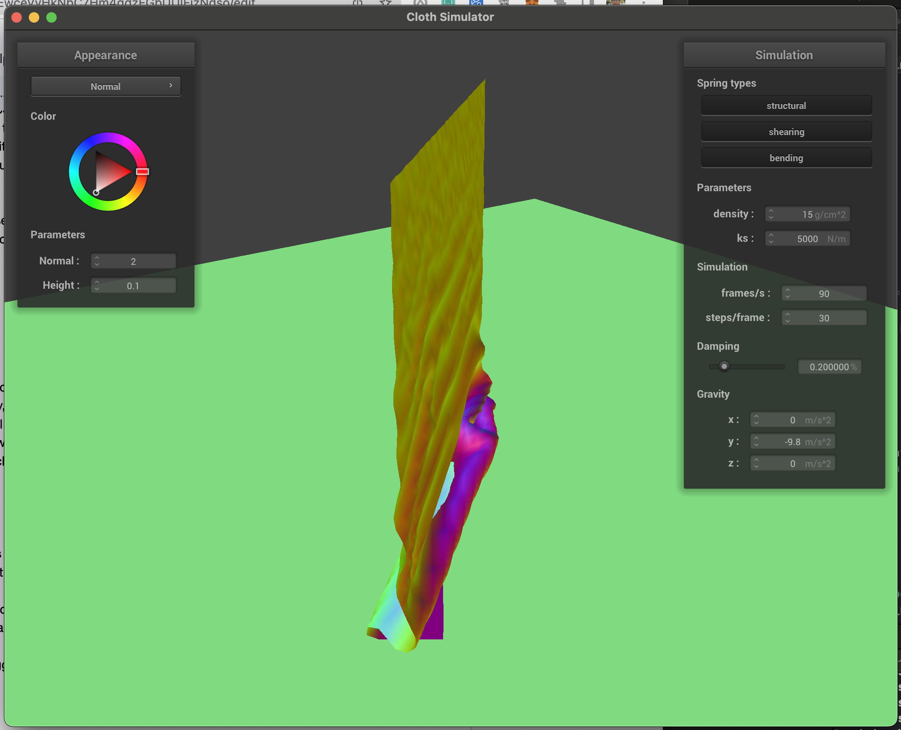

Overview
In part 1, we implemented BSDFs to represent reflection and refraction. We didn’t run into many issues in this part, as we just used the appropriate equations from the docs and the slides. One tricky part was calculating Schlick’s approximation, and we ran into an issue because we were using eta = ior1/ior2 instead of ior2/ior1 when trying to calculate R. In part 2, we implemented a thin lens. We didn’t run into any issues in this part, as we just followed the pseudocode in the docs.
Part 1: Mirror and Glass Materials
Max Ray Depth 0: Only the light appears, because the object only get seen if light bounces off them which can’t happen with 0 bounces.
Max Ray Depth 1: The spheres and walls show up because light can bounce off them into the camera
Max Ray Depth 2: The light can now bounce from another object to the sphere, instead of coming directly from the light, so the left sphere now reflects light from other objects and the right sphere refracts. We can see the reflection of the right sphere inside the left sphere because of this.
Max Ray Depth 3: We can see a reflection of the left sphere inside the reflection of the right sphere in the left sphere. With 3 bounces, light can go from light source -> left sphere -> right sphere -> left sphere -> camera. The right sphere refracts light from the light source into its shadow, so now the center of its shadow is bright. This happens because the light can go from light source -> into right sphere -> out of right sphere -> ground -> camera.
Max Ray Depth 4: The light from the bright spot in the right sphere's shadow reflects back up into the right sphere, which causes the bottom right part of it to be brighter. There is also now a bright spot in on the wall, perhaps also caused by the bright spot reflecting light.
Max Ray Depth 5 and 100: not much visibly changes, but the scene becomes slightly brighter.


|
|
Part 4: Depth of Field
We did part 1 and 4 of the project, so we unfortunately cannot use a microfacet BSDF :(. The pinhole camera model (with a diagram below) is when the scene you are trying to capture enters through a small hole where lightrays enter and recapture the image in a plane behind the hole. Usually, that plane is the camera sensor. Meanwhile, in the thin-lens model, light first hits a lens that transforms the light ray such that parts of the scene are “focused” (represented accurately) while other parts are out-of-focus (blurry). The primary difference is how light travels through each model. In the pinhole model, every light ray travels from a point in the scene into a point in the plane behind the hole. However, in the thin-lens model the light hits the lens first, causing a focusing effect on a specific part of the scene.


 


|
|